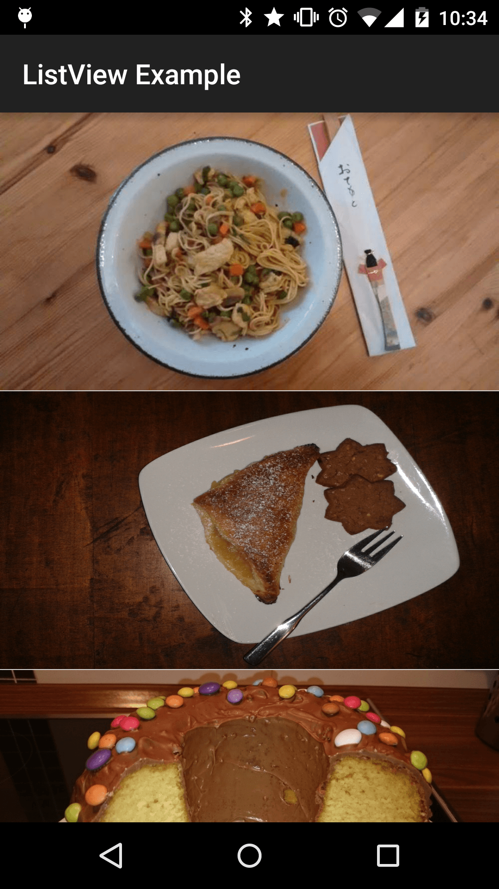

Introducción
Lo primero que compartimos es Picasso, un framework muy famoso para cargar y almacenar en caché imágenes. Cada framework potente suele ser muy simple de usar, pero detrás hay muchas funciones o trucos que no se deben ignorar. Picasso también es así.
Índice
- Introducción a Picasso
- Picasso avanzado
- Uso en adaptadores (ListView, GridView...)
- Manejo de null/vacíos en listas
- placeholder(), error(), fundido
- Escalado y ajuste de tamaño de imágenes
Introducción a Picasso
Agregar a dependencias
Primero, necesitas agregar la dependencia; actualmente usaremos la última versión.2.5.2Hay dos formas bien conocidas de agregar la dependencia.
Gradle
compile 'com.squareup.picasso:picasso:2.5.2'
Maven
<dependency>
<groupId>com.squareup.picasso</groupId>
<artifactId>picasso</artifactId>
<version>2.5.2</version>
</dependency>Carga básica de imágenes
Picasso utiliza programación encadenada (fluida). Se necesitan al menos tres parámetros para completar una solicitud básica de imagen.
- with(Context context)- Muchas vecesAndrod API- Se llamará, aquí no hay diferencia.
- load(String imageUrl)- Aquí se indica qué imagen se debe cargar. En la mayoría de los casos, usaremos un String que representa una URL de imagen.
- into(ImageView targetImageView)- El ImageView de destino para mostrar.
Pongamos un ejemplo sencillo.
ImageView targetImageView = (ImageView) findViewById(R.id.imageView);
String internetUrl = "http://i.imgur.com/DvpvklR.png";
Picasso
.with(context)
.load(internetUrl)
.into(targetImageView);
En este punto, siempre que la imagen en la URL sea correcta, en un momento verás la imagen deseada. Si la imagen no existe, Picasso devolverá la devolución de llamada de error. Cómo solicitar la devolución de llamada de error lo explicaré más adelante. Con solo tres líneas ya has completado la solicitud de imagen, pero esto es solo la punta del iceberg.
Picasso avanzado
Además del uso básico, descubriremos que el método load es un método sobrecargado. De hecho, además de cargar con el tipo básico String, también podemos intentar cargar las imágenes desde varias fuentes.
Carga desde recursos
int resourceId = R.mipmap.ic_launcher;
Picasso
.with(context)
.load(resourceId)
.into(imageViewResource);
Carga desde archivos
File file = new File(Environment.getExternalStoragePublicDirectory(Environment.DIRECTORY_PICTURES), "Running.jpg");
Picasso
.with(context)
.load(file)
.into(imageViewFile);
Carga desde Uri
Uri uri = resourceIdToUri(context, R.mipmap.future_studio_launcher);
Picasso
.with(context)
.load(uri)
.into(imageViewUri);
public static final String ANDROID_RESOURCE = "android.resource://";
public static final String FOREWARD_SLASH = "/";
private static Uri resourceIdToUri(Context context, int resourceId) {
return Uri.parse(ANDROID_RESOURCE + context.getPackageName() + FOREWARD_SLASH + resourceId);
}
Uso en adaptadores (ListView, GridView...)
Primero, necesitamos algunas imágenes de prueba.
public static String[] eatFoodyImages = {
"http://i.imgur.com/rFLNqWI.jpg",
"http://i.imgur.com/C9pBVt7.jpg",
"http://i.imgur.com/rT5vXE1.jpg",
"http://i.imgur.com/aIy5R2k.jpg",
"http://i.imgur.com/MoJs9pT.jpg",
"http://i.imgur.com/S963yEM.jpg",
"http://i.imgur.com/rLR2cyc.jpg",
"http://i.imgur.com/SEPdUIx.jpg",
"http://i.imgur.com/aC9OjaM.jpg",
"http://i.imgur.com/76Jfv9b.jpg",
"http://i.imgur.com/fUX7EIB.jpg",
"http://i.imgur.com/syELajx.jpg",
"http://i.imgur.com/COzBnru.jpg",
"http://i.imgur.com/Z3QjilA.jpg",
};
Necesitamos una Activity, en la cual crear un Adapter y adaptarlo a un ListView.
public class UsageExampleAdapter extends ActionBarActivity {
@Override
protected void onCreate(Bundle savedInstanceState) {
super.onCreate(savedInstanceState);
setContentView(R.layout.activity_usage_example_adapter);
listView.setAdapter(new ImageListAdapter(UsageExampleAdapter.this, eatFoodyImages));
}
}
A continuación, no puede faltar el archivo de diseño del Adapter. Es muy simple: es la imagen que queremos mostrar.ImageView
<?xml version="1.0" encoding="utf-8"?>
<ImageView xmlns:android="http://schemas.android.com/apk/res/android"
android:layout_width="match_parent"
android:layout_height="200dp"/>
Finalmente, tenemos que implementar.ImageListAdapter 。
public class ImageListAdapter extends ArrayAdapter {
private Context context;
private LayoutInflater inflater;
private String[] imageUrls;
public ImageListAdapter(Context context, String[] imageUrls) {
super(context, R.layout.listview_item_image, imageUrls);
this.context = context;
this.imageUrls = imageUrls;
inflater = LayoutInflater.from(context);
}
@Override
public View getView(int position, View convertView, ViewGroup parent) {
if (null == convertView) {
convertView = inflater.inflate(R.layout.listview_item_image, parent, false);
}
Picasso
.with(context)
.load(imageUrls[position])
.fit() // 稍后解释
.into((ImageView) convertView);
return convertView;
}
}
La parte importante está engetView()este método. Por supuesto, descubrirás que el uso de Picasso no cambia mucho. Parece que no vale la pena dedicar este artículo a explicarlo, pero en realidad, detrás de escena, Picasso cancela automáticamente las solicitudes de imágenes al desplazarse, limpia las imágenes y carga la imagen correcta enImageView。
注Más adelante explicaremos más a fondo el uso optimizado de adaptadores.fit() y tags()。

El poder de Picasso: caché
Cuando te desplazas hacia arriba y abajo repetidamente, verás que las imágenes se muestran mucho más rápido que antes. Seguramente ya lo habrás adivinado: estas imágenes provienen de la caché de alta velocidad, sin necesidad de cargarlas desde la red. Picasso carga las imágenes principalmente de tres fuentes:Memoria -> Disco -> RedAl final, cualquier cosa que necesites hacer, ¡Picasso ya lo ha hecho por ti! Incluso se puede cambiar el tamaño de la caché; esto lo explicaremos más adelante.
Manejo de null/vacíos en listas
Al usar Picasso, quizás nos encontremos con dos problemas:IllegalArgumentException: Path must not be emptyy, además, el mapeo incompleto de imágenes. Para asegurar que el programa funcione correctamente, ofrecemos dos formas de resolver el problema.
Cancelar solicitudes de imágenes de Picasso
Si no tienes intención de cargar, necesitas cancelar esta solicitud usandocancelRequest()Puede asegurar que este ImageView no tenga devoluciones de llamada de solicitud. Si el usuario se desplaza muy rápido, puede ocurrir que el ListView y el ImageView se reutilicen. Cancelar la solicitud evita que se muestren imágenes incorrectas.
Usar placeholders
La otra forma es usar placeholders; en pocas palabras, usar una imagen predeterminada.
Ejemplo de código
@Override
public View getView(int position, View convertView, ViewGroup parent) {
if (null == convertView) {
convertView = inflater.inflate(R.layout.listview_item_image, parent, false);
}
ImageView imageView = (ImageView) convertView;
if (TextUtils.isEmpty(imageUrls[position])) {
// option 1: 取消Picasso的图片请求
Picasso
.with(context)
.cancelRequest(imageView);
imageView.setImageDrawable(null);
// option 2: 使用占位符
/*
Picasso
.with(context)
.load(R.drawable.floorplan)
.into(imageView);
*/
}
else {
Picasso
.with(context)
.load(imageUrls[position])
.fit() // will explain later
.into(imageView);
}
return convertView;
}
placeholder(), error(), fundido
.placeholder() Marcador de posición
Casi olvidamos considerar un problema: un ImageView vacío es una experiencia muy poco amigable. Si usas Picasso para cargar imágenes desde la red, los diferentes entornos de red pueden impedir que la imagen se cargue de inmediato. En este momento usamos nuestro marcador de posición..placeholder()Él precargará una imagen (por supuesto, local) hasta que la imagen de red se cargue correctamente.
Picasso
.with(context)
.load(UsageExampleListViewAdapter.eatFoodyImages[0])
.placeholder(R.mipmap.ic_launcher)
.into(imageViewPlaceholder);
.error() Marcador de posición de error
Supongamos que el enlace de la imagen que cargamos ya no es válido. Podemos elegir la operación adecuada mediante la devolución de llamada de error de Picasso, pero esto sería demasiado complicado. En la mayoría de los casos solo necesitas llamar aerror()y listo.
Picasso
.with(context)
.load("http://futurestud.io/non_existing_image.png")
.placeholder(R.mipmap.ic_launcher)
.error(R.mipmap.future_studio_launcher)
.into(imageViewError);
Usar noFade()
Si quieres mostrar la imagen directamente sin usar el efecto de fundido, puedes usar noFade().
Picasso
.with(context)
.load(UsageExampleListViewAdapter.eatFoodyImages[0])
.placeholder(R.mipmap.ic_launcher)
.error(R.mipmap.future_studio_launcher)
.noFade()
.into(imageViewFade);
Usar noPlaceholder()
Pensemos en la siguiente situación: cargas una imagen en un ImageView y, después de un tiempo, quieres cargar otra imagen en el mismo ImageView. Con la configuración predeterminada, al volver a llamar a Picasso, el ImageView cargará la imagen del placeholder establecido anteriormente. Si este ImageView es importante en tu interfaz de usuario, cambiar rápidamente la imagen del ImageView en cuestión de segundos se verá muy inapropiado. Una buena solución es llamar a.noPlaceholder()este método. Antes de que se cargue la segunda imagen, el ImageView mostrará siempre la primera imagen. Esto será muy amigable para el usuario.
Picasso
.with(context)
.load(UsageExampleListViewAdapter.eatFoodyImages[0])
.placeholder(R.mipmap.ic_launcher)
.into(imageViewnoPlaceholder, new Callback() {
@Override
public void onSuccess() {
Picasso
.with(context)
.load(UsageExampleListViewAdapter.eatFoodyImages[1])
.noPlaceholder()
.into(imageViewNoPlaceholder);
}
@Override
public void onError() {
}
});
Escalado y ajuste de tamaño de imágenes
Cambiar el tamaño con resize(x,y)
En general, si las imágenes del servidor coinciden exactamente con el tamaño de tus imágenes, se equilibrarán bien el ancho de banda, el consumo de memoria y la calidad de imagen, pero no siempre se logra. Si la imagen obtenida tiene un tamaño que no satisface lo esperado, se puede usarresize(horizontalSize, verticalSize)para cambiar el tamaño de la imagen.
Picasso
.with(context)
.load(UsageExampleListViewAdapter.eatFoodyImages[0])
.resize(600, 200)
.into(imageViewResize);
Usar scaleDown()
Si hemos llamado alresize(x,y)método, Picasso generalmente recalculará para cambiar la calidad de carga de la imagen, por ejemplo, cuando una imagen pequeña se convierte en una imagen grande para mostrarla. Pero si nuestra imagen original es más grande que las especificaciones de la nueva imagen redimensionada, podemos llamar a onlyScaleDown() para mostrarla directamente sin recalcular.
Picasso
.with(context)
.load(UsageExampleListViewAdapter.eatFoodyImages[0])
.resize(6000, 2000)
.onlyScaleDown() //如果它大于6000x2000像素，将仅对图像进行调整大小。
.into(imageViewResizeScaleDown);
Evitar el escalado y estiramiento de imágenes
Cuando operamos con imágenes, la proporción entre el tamaño original y el objetivo puede causar distorsión. Para evitar que esto ocurra, Picasso ofrece dos soluciones: llamar acenterCrop() o centerInside()。 centerCrop()centerCrop() utiliza una técnica de recorte para escalar la imagen, llenar los límites del ImageView y luego recortar el exceso. Con este método, el ImageView se rellenará adecuadamente, pero es posible que la imagen no se muestre por completo.
Picasso
.with(context)
.load(UsageExampleListViewAdapter.eatFoodyImages[0])
.resize(600, 200) // resizes the image to these dimensions (in pixel)
.centerCrop()
.into(imageViewResizeCenterCrop);
CenterInside()
centerInside() también es una técnica de recorte. Al escalar, el ancho y el alto de la imagen serán iguales o menores que los límites establecidos del ImageView. La imagen se mostrará por completo, pero tal vez no llene totalmente el ImageView.
Picasso
.with(this)
.load(eatFoodyImages[0])
.resize(600, 200)
.centerInside()
.into(imageView);
fit()
Las funciones presentadas anteriormente ya pueden resolver básicamente tus necesidades de escalado. Aquí hay otra función que resultará muy útil: fit().
Picasso
.with(context)
.load(UsageExampleListViewAdapter.eatFoodyImages[0])
.fit()
// call .centerInside() or .centerCrop() to avoid a stretched image
.into(imageViewFit);
fit() medirá el ancho y alto del ImageView, y usará resize() internamente para reducir el tamaño de la imagen y adaptarla al ImageView. Hay dos cosas que debes saber sobre fit(): primero, llamar a fit() retrasará la solicitud de imagen, porque Picasso necesita esperar hasta que se midan las dimensiones del ImageView; segundo, solo se puede usar un ImageView como objetivo de fit (más adelante veremos otros objetivos). La ventaja es que la imagen usa la resolución más baja, sin verse afectada por la calidad de la imagen. Una resolución más baja significa que ocupa menos caché.
Resumen
Hasta aquí, la primera etapa de aprendizaje de Picasso termina aquí. Antes, el uso que el blogger hacía de Picasso se quedaba mayormente en esta parte. Sí, esto es suficiente para usar. Si todavía tienes tiempo suficiente, puedes seguir leyendo, porque tiene aún más pequeñas funciones.